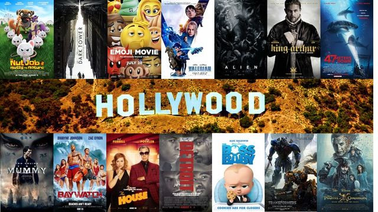

I transformed a raw dataset on Nashville housing, sourced from GitHub, to make it analysis-ready using SQL Server. The project involved data cleaning
steps to improve data integrity and usability. These transformations included converting date formats, handling null values, splitting address columns,
standardizing categorical data, removing duplicates, and dropping unnecessary columns. The goal was to prepare the dataset for comprehensive analysis
and reporting.


This project focused on analyzing global COVID-19 data using SQL Server. The data includes COVID-19 case counts, deaths, population metrics, and
vaccination statistics, sourced from GitHub. The analysis aimed to extract insights into infection rates, death percentages, vaccination coverage,
and other key statistics, enabling an in-depth understanding of the pandemic's global impact.
Skills: SQL Data Analysis,
Data Transformation,
Data Aggregation,
JOINs for relational data analysis,
Temporary Tables,
Common Table Expressions (CTEs),
Data Cleaning, Formatting, and
Window Functions.

I employed Tableau to create dynamic visualizations and interactive dashboards for the COVID-19 data, facilitating intuitive exploration and interpretation. These visualizations provided a comprehensive overview of COVID-19 trends, allowing stakeholders to easily understand complex data patterns.

The objective of this project is to analyze a movie dataset to identify patterns and insights about budget allocations, gross earnings, and the relationships between various factors that influence revenue. Leveraging libraries such as pandas, seaborn, and matplotlib, we’ll perform data cleaning, transformation, and analysis to examine correlations and explore company-level performance across movies released between 1980 and 2020.
Data analysis of the data job market, focusing on data analyst roles. This project was created to navigate and understand the job market more effectively. It delves into the top-paying and in-demand Skills
to help find optimal job opportunities for data analysts.
It contains detailed information on job titles, salaries, location, and essential skills. Through a series of Python scripts, I explore key questions such as the most demanded skills, salary trends,
and the intersection of demand and salary in data analytics.